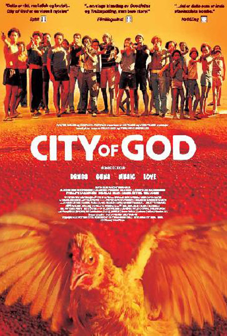

Nawal (Lubna Azabal), a dying Middle Eastern woman living in Montreal, leaves separate letters to her twin children to be read once she passes away. Jeanne (Mélissa Désormeaux-Poulin) is to deliver hers to the father the twins never knew, and Simon (Maxim Gaudette) is to give his to the brother they never knew they had. The siblings travel to the Middle East separately, where they each experience acts of brutality, uncover a startling family history, and have revelations about themselves.
The Lives of Others (2006)
Directed by Florian Henckel von Donnersmarck
In 1983 East Berlin, dedicated Stasi officer Gerd Wiesler (Ulrich Mühe), doubting that a famous playwright (Sebastian Koch) is loyal to the Communist Party, receives approval to spy on the man and his actress-lover Christa-Maria (Martina Gedeck). Wiesler becomes unexpectedly sympathetic to the couple, then faces conflicting loyalties when his superior takes a liking to Christa-Maria and orders Wiesler to get the playwright out of the way.
City of God
Directed by Fernando Meirelles and Kàtia Lund
In the poverty-stricken favelas of Rio de Janeiro in the 1970s, two young men choose different paths. Rocket (Alexandre Rodrigues) is a budding photographer who documents the increasing drug-related violence of his neighborhood. José "Zé" Pequeno (Leandro Firmino da Hora) is an ambitious drug dealer who uses Rocket and his photos as a way to increase his fame as a turf war erupts with his rival, "Knockout Ned" (Seu Jorge).

Event Over
Volver
Directed by Pedro Almodóvar
Raimunda (Penélope Cruz) works and lives Madrid with her husband Paco and daughter Paula. Her sister Sole (Lola Dueñas) lives nearby and they both miss their mother Irene (Carmen Maura), who died several years ago in a house fire along with their father. A former neighbor from their hometown reports that she has seen the ghost of Irene and both daughters do not believe her. After a murder and a family tragedy, Irene's spirit materializes around her daughters to help comfort them.